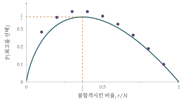

STEP I 2001, 문제 14
계속 읽기 전에 문제를 먼저 읽어 보자. 문제는 STEP Support Programme의 문제 데이터베이스에 있다: step.maths.org/questions/01-s1-q14
도입
지원자를 한 명씩 면접하면서 그 자리에서 결정을 내려야 한다고 하자. 이 지원자를 합격시키고 멈추거나, 아니면 영원히 불합격시키고 다음 지원자를 본다. 목표는 단 한 명의 최고 지원자를 뽑는 것이다. 너무 일찍 합격시키면 더 나은 사람을 놓치기 쉽고, 너무 오래 기다리면 최고의 지원자는 이미 지나가 버렸기 쉽다. 어떻게 해야 할까?
그 답은 확률(probability)론에서 가장 유명한 결과 가운데 하나이다. 처음 \(37\%\)의 지원자는 모두 불합격시키고, 그 뒤로는 앞선 모든 지원자보다 나은 첫 지원자를 합격시킨다. 이 방법은 약 \(37\%\)의 확률로 성공하며, \(37\%\)는 바로 \(\frac1e\)이다. 이 문제에서는 기본적인 확률을 계산하고, 짝을 이루는 STEP II 2006의 문제(연습문제에 있다)에서는 이 전략의 가장 단순한 형태, 즉 첫 번째 지원자만 불합격시키는 전략을 분석한다.
시작하기 전에
면접 순서가 무작위일 때, 전체에서 최고인 지원자가 처음 면접한 \(n\)명 안에 있을 확률은 얼마인가?
최고의 지원자는 \(N\)개의 자리 중 어느 자리에나 같은 확률로 있으므로, 구하는 확률은 \(\frac nN\)이다.
차근차근 풀기
단계 1 처음 \(n\)명 중 최고가 전체 최고인 경우
처음 \(n\)명 중 최고인 사람이 전체 최고인 것은 전체 최고가 처음 \(n\)명 안에 있을 때이고, 그때뿐이다. 따라서 확률은 \(\frac nN\)이다.■
단계 2 최고 또는 두 번째
처음 \(n\)명 중 최고인 사람이 전체에서 두 번째인 것은 두 번째 지원자가 처음 \(n\)명 안에 있고 최고의 지원자는 그 안에 없을 때이고, 그때뿐이다. 그 확률은 얼마인가?
두 번째 지원자가 처음 \(n\)명 안에 있을 확률은 \(\frac nN\)이다. 이 조건 아래에서 최고의 지원자는 나머지 \(N - 1\)개의 자리 중 하나에 있고, 그중 \(N - n\)개가 처음 \(n\)명 뒤의 자리이다. 따라서 \[\mathrm{P}(\text{최고 또는 두 번째}) = \frac nN + \frac nN\cdot\frac{N - n}{N - 1}. \qed\] \(N = 4\), \(n = 2\)이면 \(\frac12 + \frac12\cdot\frac23 = \frac56\)이다. 상위 두 지원자가 네 자리 중 어디에 오는지를 나열해 보면(순서를 고려한 \(12\)가지 배치가 모두 같은 확률이다), 상위 두 지원자가 모두 \(3\)번째와 \(4\)번째 자리에 오는 \(2\)가지 배치를 제외하면 처음 두 명 중 최고인 사람은 언제나 상위 두 명 중 하나이다. 따라서 확률은 \(\frac{10}{12} = \frac56\)이다.
단계 3 최적 전략
전략(strategy): 처음 \(r\)명의 지원자를 불합격시키고, 그 뒤로는 앞선 \(r\)명 모두보다 나은 첫 지원자를 합격시킨다. 최고의 지원자가 \(k > r\)번째 자리에 있을 때, 이 전략이 그 사람을 뽑는 것은 언제인가?
이 전략이 \(k\)번째 자리에 있는 최고의 지원자를 뽑는 것은 \(r + 1, \ldots, k - 1\)번째 자리의 어떤 지원자도 처음 \(r\)명 모두를 앞서지 못할 때, 즉 처음 \(k - 1\)명 중 최고인 사람이 처음 \(r\)명 안에 있을 때이고, 그때뿐이다. 1단계에서 \(N\)을 \(k - 1\)로 바꾸면 이 확률은 \(\frac{r}{k - 1}\)이다. 각 자리 \(k\)의 확률은 \(\frac1N\)이므로 \[\mathrm{P}(\text{성공}) = \frac1N\sum_{k=r+1}^{N}\frac{r}{k - 1} = \frac rN\Bigl(\frac1r + \frac{1}{r + 1} + \cdots + \frac{1}{N - 1}\Bigr).\]
\(N\)이 클 때 \(x = \frac rN\)이라 하자. 이 합은 근사적으로 \(\ln\frac{N}{r}\)이다. \(x\ln\frac1x\)를 최대로 하는 \(x\)의 값은 무엇인가?
성공 확률은 근사적으로 \(x\ln\frac1x\)이다. 미분(differentiation)하면 \(x = \frac1e\)일 때 \(\ln\frac1x - 1 = 0\)이고, 최댓값은 \(\frac1e \approx 0.368\)이다(그림 12.12.1).

돌아보기
자리의 대칭성(symmetry). 무작위 순서에서는 각 지원자가 어느 자리에나 같은 확률로 있으므로, \(\frac nN\)을 바로 얻었다.
최고의 지원자가 어디 있는지로 조건을 건다. 전략의 성공 확률은 최고의 지원자의 자리에 대해 조건부(conditioning)로 나누어 계산했다.
합이 적분이 된다. \(N\)이 클 때 조화합(harmonic sum)은 로그가 되었고, 최적화를 하여 \(\frac1e\)을 얻었다.
숨은 수학
최적 멈춤
비서 문제(secretary problem)는 최적 멈춤(optimal stopping)의 출발점이 된 예이다. 최적 멈춤이란 시간에 따라 들어오는 정보를 바탕으로, 기대 보상을 최대로 하도록 언제 행동할지를 결정하는 문제이다. (“\(r\)명을 불합격시키고, 그 뒤 지금까지의 최고가 나오면 뽑는다”는 전략만이 아니라) 모든 전략 가운데 이러한 문턱 규칙이 최적임을 마지막 지원자에서부터 거꾸로 따져 가는 논증으로 증명할 수 있다. 주식을 언제 팔지, 금융 옵션을 언제 행사할지, 주차 자리를 얼마나 오래 찾을지도 같은 수학이 지배한다. 놀라운 점은 극한에서 답이 \(N\)에 의존하지 않는다는 것이다. 지원자가 백 명이든 백만 명이든 \(\frac1e\)의 확률로 성공한다.
변형
상위 두 지원자 중 누구라도 만족한다면, 최선의 전략은 약 \(57\%\)의 확률로 성공한다. 최고의 지원자를 뽑을 확률 대신 뽑힌 지원자의 기대 순위(expected rank)를 최적으로 하려 한다면, 최적 전략은 더 복잡해지고 기대 순위는 약 \(3.87\)로 수렴한다(Chow, Moriguti, Robbins, Samuels, 1964). 불합격시킨 지원자를 어떤 확률로 다시 부를 수 있거나, 지원자 점수의 분포를 알고 있다면(“완전 정보” 문제) 답은 또 달라진다. 연습문제의 아이스크림 문제는 가장 단순한 경우이다. 한 명만 불합격시키고, 그다음에 더 나은 것이 나오면 택한다.
이 문제는 1950년대에 수학자들 사이에서 돌았고, 1960년에 마틴 가드너(Martin Gardner)가 “구골(googol) 게임”이라는 이름으로 널리 알렸다(종이쪽지에 수를 적으면, 상대가 한 장씩 뒤집어 보다가 가장 큰 수에서 멈춰야 한다). Thomas Ferguson의 글 “Who solved the secretary problem?”(1989)은 이 문제의 얽히고설킨 역사를 추적한다. 한 전승에 따르면 천문학자 요하네스 케플러(Johannes Kepler)는 1611년에 두 번째 아내를 고르면서 열한 명의 후보를 만났고, 결국 다섯 번째 후보에게 청혼했다고 한다.
사고 기술
최선의 전략을 모를 때는 매개변수를 가진 자연스러운 전략의 모임을 생각하고, 성공 확률을 그 매개변수의 함수(function)로 계산한 뒤 최적화한다.
대학에서는 이 방법을 결정 이론(decision theory), 게임 이론(game theory), 통계학(statistics)에서 쓴다. 그 모임 안에서 최선인 전략이 전체에서도 최선임을 보이는 것은 더 어렵고 더 흥미로운 단계로, 흔히 역진 귀납법(backward induction)으로 해낸다.
더 도전하기
아이스크림. STEP II 2006, 문제 13에 도전해 보라. 간단한 규칙을 쓰는 작은 비서 문제이다. 첫 번째 것을 거절하고, 그다음 그것보다 나은 첫 번째 것을 택한다.
작은 \(N\). \(N = 4\)일 때 최선의 \(r\)의 값과 성공 확률을 구하라. 모든 경우를 나열하여 확인하라.
최고 또는 두 번째. 소문항 (ii)를 이용하여, “처음 \(n\)명 중 최고가 상위 두 명 중 하나이다”가 “처음 \(n\)명 중 최고가 전체 최고이다”보다 훨씬 일어나기 쉬움을 논증하라. 이것은 상위 두 명 중 하나를 뽑기 위한 전략에 대해 무엇을 시사하는가?
정확한 최댓값. \(N = 10\)일 때 그림에서 \(r = 3\)이 최적임을 확인하라. \(N = 100\)일 때 \(r = 37\)이 최적임을 보여라(\(r = 36\), \(37\), \(38\)일 때의 성공 확률은 소수점 아래 넷째 자리까지 \(0.3710\), \(0.3710\), \(0.3708\)이다).
더 읽을거리
Thomas Ferguson, “Who solved the secretary problem?”, Statistical Science 4 (1989). 역사와 여러 변형을 다룬다. 온라인에서 무료로 볼 수 있다.
Brian Christian & Tom Griffiths, Algorithms to Live By (William Collins). 최적 멈춤을 비롯한 여러 알고리즘을 일상의 결정에 적용한다.
Martin Gardner, New Mathematical Diversions (Mathematical Association of America). 구골 게임을 다룬다.